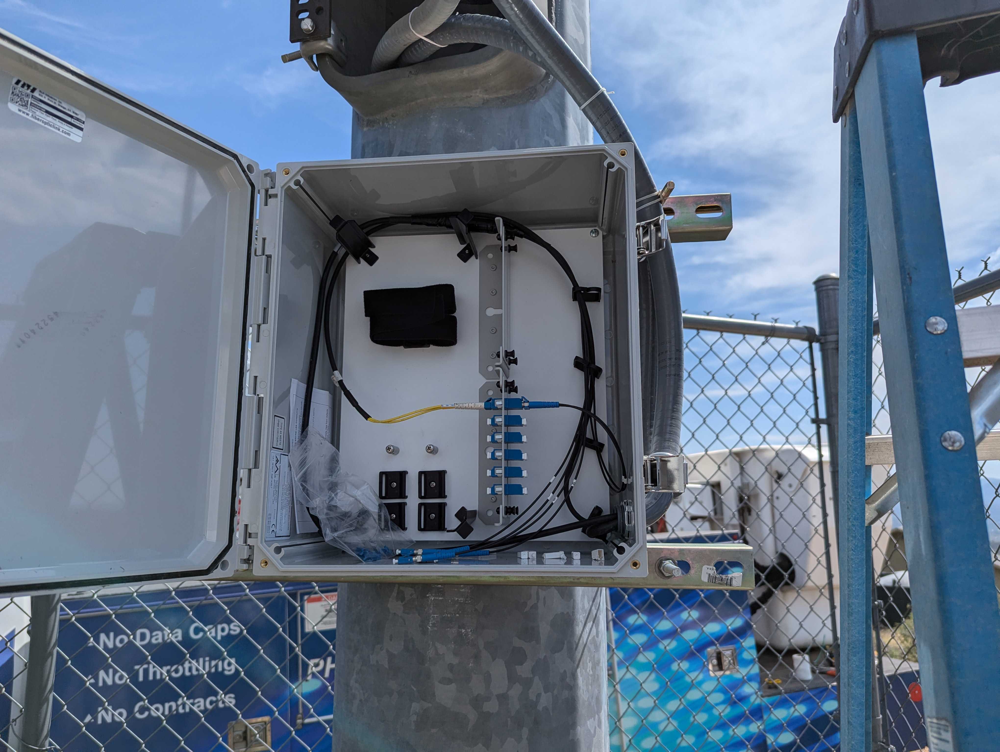
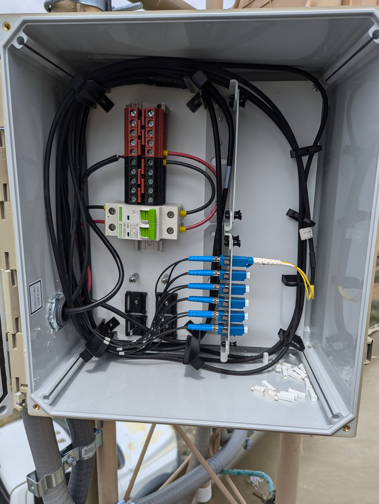

Innovation Claim
An integrated power and fiber distribution unit allows for efficient use of cabling and tower space. This lowers infrastructure costs, time to deploy, and allows for site expansion with minimal investments. The ability to diagnose power circuit issues from the ground reduces the need for climbers to ascend the tower, increasing site safety and further reducing costs.
Project Description
This project aims to add advanced features to an existing innovative prototype. This prototype has been a work in progress to fill a void encountered while designing and standing up fixed wireless sites. This is a solo project where I will wear all the hats. I will need to enhance my knowledge of microcontrollers, programming, and how to secure IoT devices. Between self study and coursework, the timeline to develop the necessary skills should align with a natural progression of the SIP framework and allow for an MVP by the end.
Visuals
 Links
Find the code on GitHub: GitHub Repository
Other Materials
Additional blueprints, concept art, diagrams...